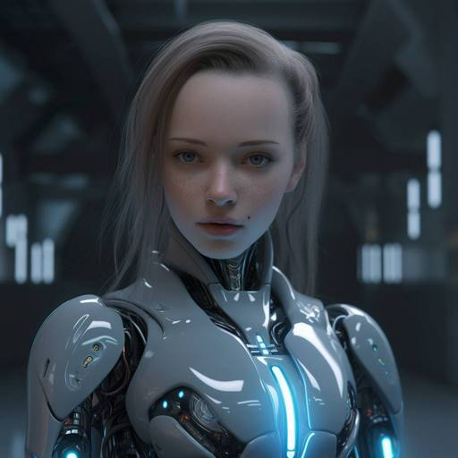

Генерация изображений с помощью AI

Искусственный интеллект (AI) предоставляет возможности для генерации удивительных изображений. С помощью различных моделей и алгоритмов, AI может создавать фотографии, иллюстрации, абстрактные произведения и многое другое.
Преимущества генерации изображений с помощью AI:
- Быстрота и эффективность процесса
- Создание уникальных и оригинальных произведений
- Автоматизация и упрощение творческого процесса
- Возможность экспериментировать с различными стилями и эффектами
5 лучших бесплатных ИИ-генераторов изображений для коммерческого использования
Генерация изображений с помощью AI открывает новые возможности для творчества и искусства.